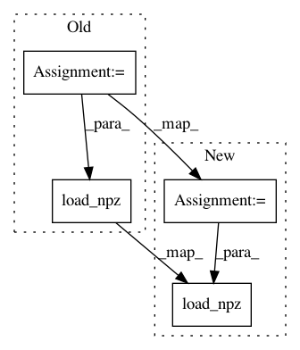

4630c3c7d27df63d3ebc9e1a527476abbbf598df,waifu2x.py,,load_models,#Any#,73
Before Change
% (args.noise_level, args.color))
model_path = os.path.join(model_dir, model_name)
if os.path.exists(model_path):
models["noise_scale"] = srcnn.archs[args.arch](ch)
chainer.serializers.load_npz(model_path, models["noise_scale"])
else:
flag = True
if args.method == "scale" or flag:
model_name = "anime_style_scale_%s.npz" % args.color
After Change
% (args.noise_level, args.color))
model_path = os.path.join(model_dir, model_name)
if os.path.exists(model_path):
models["noise_scale"] = srcnn.archs[args.arch](ch)
chainer.serializers.load_npz(model_path, models["noise_scale"])
alpha_model_name = "anime_style_scale_%s.npz" % args.color
alpha_model_path = os.path.join(model_dir, alpha_model_name)
models["alpha"] = srcnn.archs[args.arch](ch)
chainer.serializers.load_npz(alpha_model_path, models["alpha"])
In pattern: SUPERPATTERN
Frequency: 4
Non-data size: 4
Instances
Project Name: tsurumeso/waifu2x-chainer
Commit Name: 4630c3c7d27df63d3ebc9e1a527476abbbf598df
Time: 2018-02-26
Author: tsurumeso@gmail.com
File Name: waifu2x.py
Class Name:
Method Name: load_models
Project Name: chainer/chainercv
Commit Name: 434c28ab6118b32e0166085b0b348121bc750298
Time: 2017-06-09
Author: Hakuyume@users.noreply.github.com
File Name: chainercv/links/model/faster_rcnn/faster_rcnn_vgg.py
Class Name: FasterRCNNVGG16
Method Name: __init__
Project Name: chainer/chainercv
Commit Name: 434c28ab6118b32e0166085b0b348121bc750298
Time: 2017-06-09
Author: Hakuyume@users.noreply.github.com
File Name: chainercv/links/model/segnet/segnet_basic.py
Class Name: SegNetBasic
Method Name: __init__
Project Name: tsurumeso/waifu2x-chainer
Commit Name: 06b445853071e0c4003ab4d9e2255686f4b53bcc
Time: 2018-10-21
Author: tsurumeso@gmail.com
File Name: appendix/benchmark.py
Class Name:
Method Name: load_models